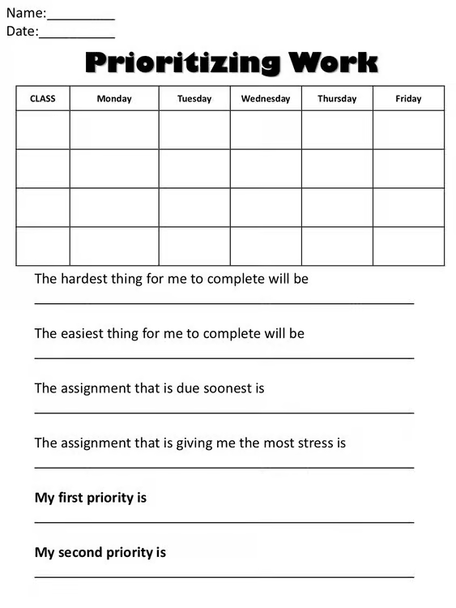

Grace Dittman
Block 2 Math
Block 3 Math
ESS
Lesson Plans
Résumé
Photos
Search
Home
›
ESS
›
weeks 8+9
›
Activities
›
Prioritizing Work Chart
Prioritizing Work Chart
Prioritizing Work .avif
← Healthy Self-Expression
Think It or Say It? Cards →
Source not yet confirmed.
Open full size

Lesson plans from the same week
Prioritizing Tasks
10/19, 10/26
Dealing with Disappointment
10/20, 10/27
Being Perceived as Friendly
10/21, 10/28
Asynchronous Day Plan (PSAT day, all three classes)
10/22
← Healthy Self-Expression
Think It or Say It? Cards →